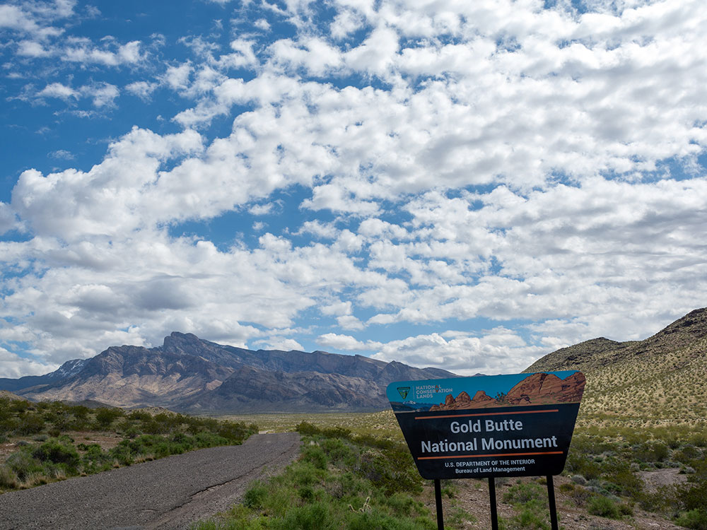
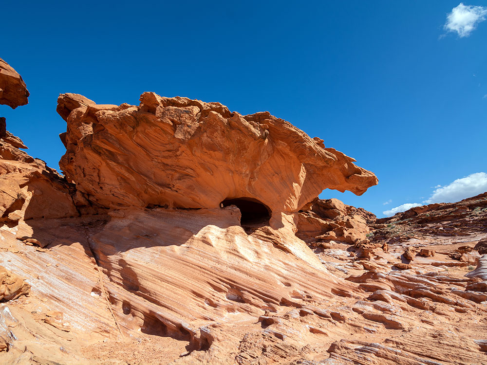
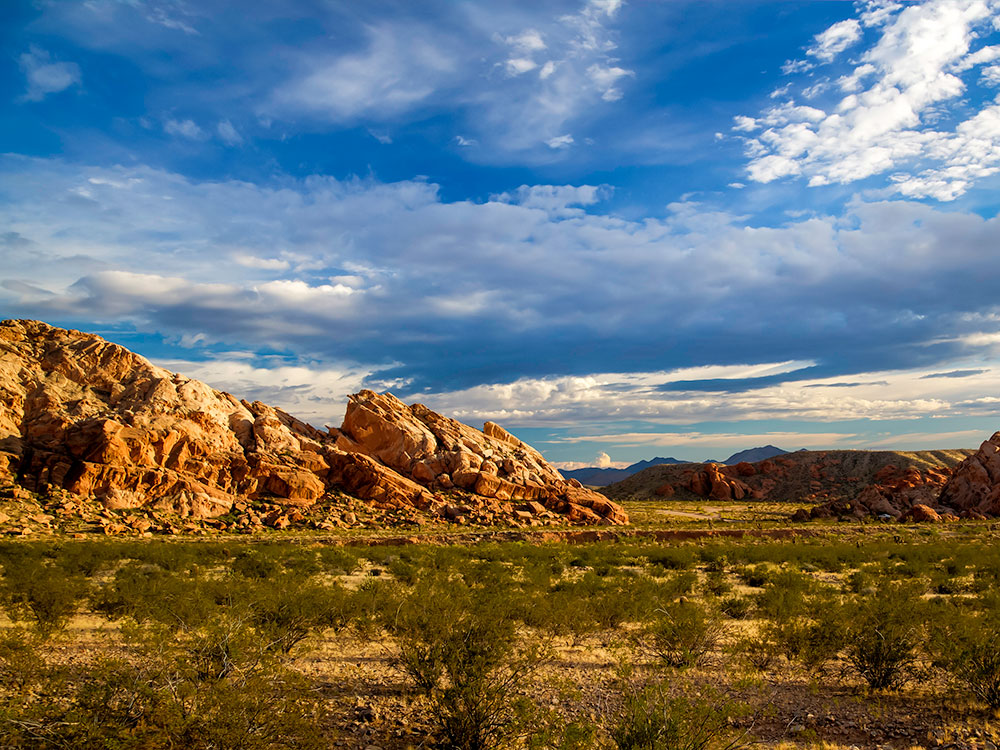
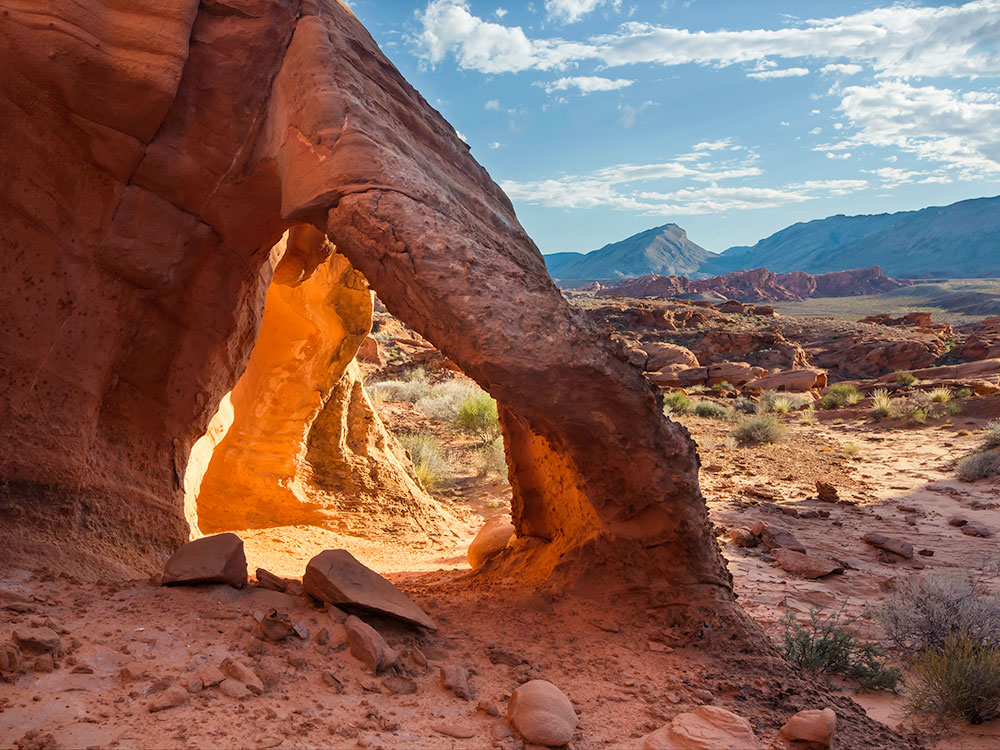
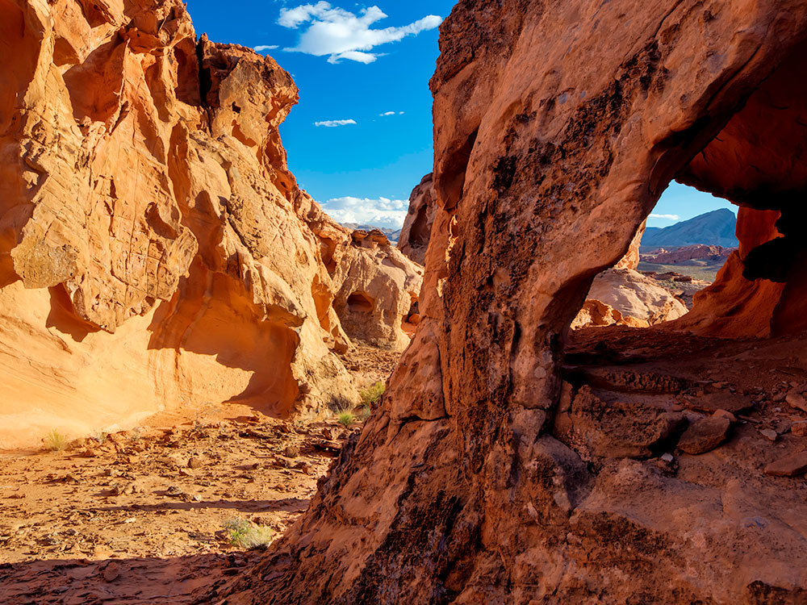
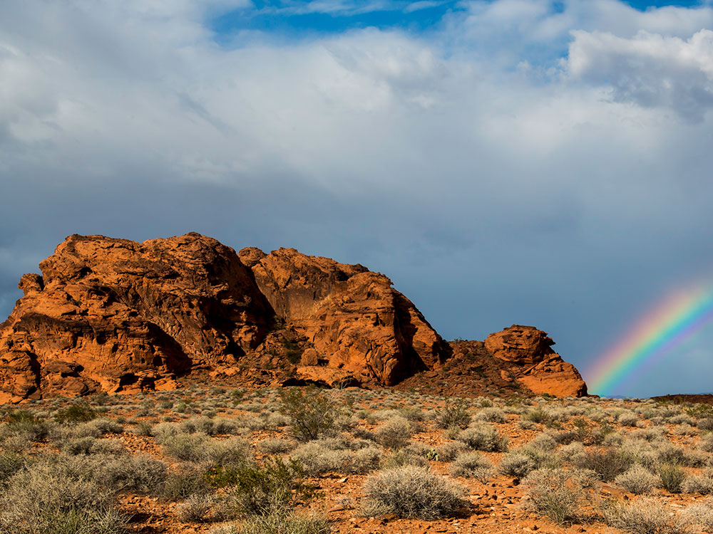
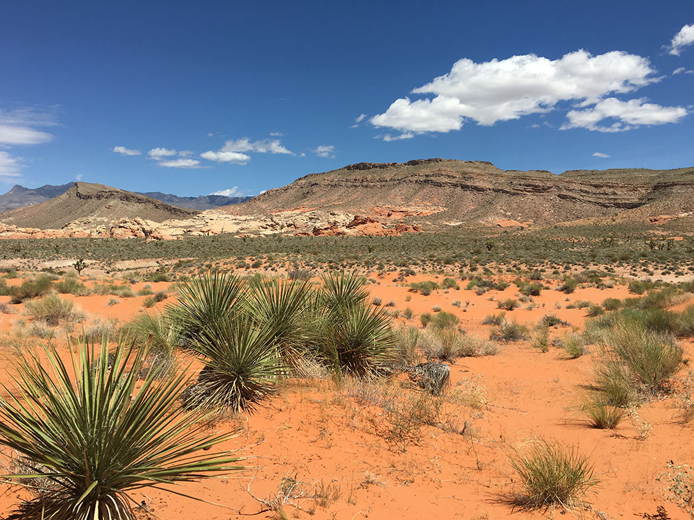
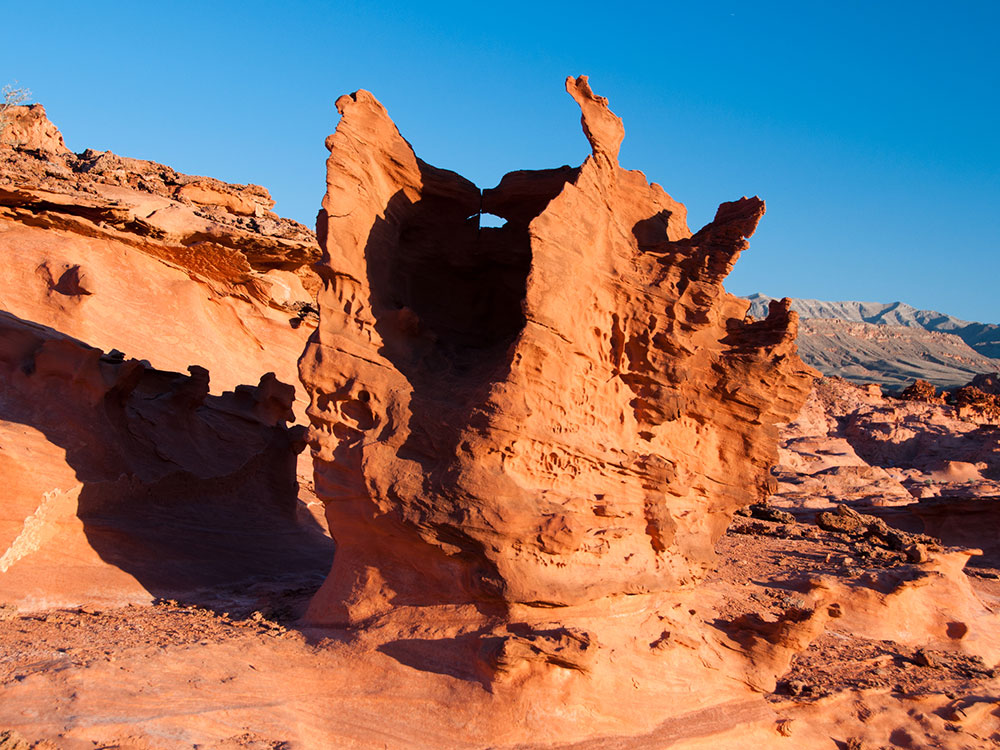
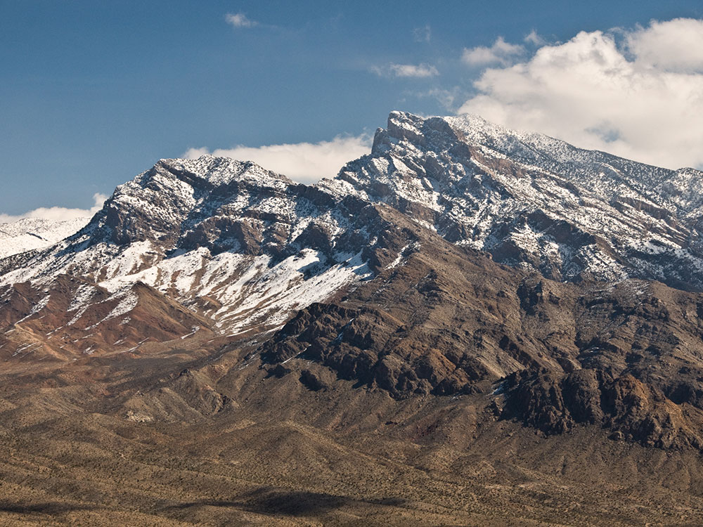

A compact desert resort town along the Colorado River known for its casinos, riverfront activities, and easy access to nearby outdoor recreation.
How to Get There
From Las Vegas (95 mi): Drive south on US‑95 toward Searchlight, then take NV‑163 east down into Laughlin.
From Kingman, AZ (35 mi): Take AZ‑68 west, cross the Colorado River into Nevada, and follow signs along Casino Drive.
Overview
Laughlin is a resort town on the Colorado River in the far southern tip of Nevada, set in the Mojave Desert about 90 miles south of Las Vegas, at an elevation of about 650 feet. Across the river is Bullhead City, Arizona. It is known for its riverfront casinos, its boating and river recreation, and its relaxed, small-town pace.
Visitors come for a quieter alternative to the Las Vegas Strip, with lower prices, river views, and entertainment, and for the water sports on the Colorado River and nearby Lake Mohave. Laughlin is especially popular with winter visitors from colder states, and each April it hosts the Laughlin River Run, one of the largest motorcycle rallies in the western United States.
The area was a crossing point on the Colorado River for centuries, home to the Mojave people, and the construction of Davis Dam, completed in 1951, led to a small community of workers. Don Laughlin, a casino operator from Minnesota, bought a small motel on the Nevada riverbank in 1964 and built it into the Riverside Resort, and the town that grew around it was later named for him. The riverfront casinos multiplied through the 1970s and 1980s, and the town became a major regional destination.
The Riverwalk, a promenade along the Colorado, links the casinos and offers views of the river, and river cruises and water taxis run along the shore. Grapevine Canyon, northwest of town, has hundreds of ancient petroglyphs carved by Native peoples, and Spirit Mountain, nearby, is sacred to the Mojave and other Yuman peoples. Hoover Dam and Lake Mead National Recreation Area are within about an hour’s drive.
Don Laughlin’s Classic Car Museum displays a large collection of vintage and classic automobiles, and local historical displays recall the town’s early days. Live shows, concerts, and car shows are staged at the resorts, and the annual River Run and other rallies and festivals are the major cultural events.
The Colorado River Heritage Greenway Park and Trails follow the river with paths and wildlife viewing, and Big Bend of the Colorado State Recreation Area offers a beach, boat launch, and camping. Lake Mohave, just upstream, is popular for boating and fishing, and desert trails and scenic drives reach nearby canyons and mountains.
Laughlin has a hot desert climate. Summers are extremely hot, with highs commonly above 105 °F, while winters are mild and sunny, with highs in the 60s °F, and it receives very little rainfall. The most comfortable seasons for outdoor activity are late fall through spring, which is also the peak visitor season.
Things to Do
Experience Nevada's Riverside Resort Destination
Laughlin is located along the Colorado River in southern Nevada and is known for its waterfront resorts, casinos, outdoor recreation, and sunny desert climate. The city attracts visitors seeking a combination of entertainment, river activities, scenic desert landscapes, and easy access to nearby natural attractions.
Enjoy Recreation on the Colorado River
The Colorado River is the centerpiece of Laughlin and offers opportunities for boating, jet skiing, kayaking, paddleboarding, fishing, swimming, and scenic river cruises. Visitors can enjoy miles of waterfront views while exploring one of the region's most popular recreational resources.
Explore Laughlin's Resort and Casino District
Laughlin features a collection of riverfront resorts offering gaming, live entertainment, dining, shopping, nightlife, and special events. The Riverwalk connects many of the major resorts, allowing visitors to enjoy scenic walks along the water.
Visit Big Bend of the Colorado State Recreation Area
Located just south of Laughlin, this popular recreation area offers beaches, picnic areas, hiking, camping, fishing, and wildlife viewing along the Colorado River. It provides a quieter outdoor experience while showcasing the beauty of the surrounding Mojave Desert.
Discover Grapevine Canyon
A short drive from Laughlin, Grapevine Canyon is home to one of the largest collections of Native American petroglyphs in southern Nevada. Visitors can explore a scenic desert canyon while viewing hundreds of ancient rock art panels left by Indigenous peoples.
Take a Scenic Drive to Christmas Tree Pass
This picturesque desert route winds through the Newberry Mountains and offers access to unique rock formations, Joshua tree forests, petroglyph sites, and expansive views of the Mojave Desert. It is a favorite destination for sightseeing and photography.
Top Trails
Grapevine Canyon Trail
Length: Approximately 2 miles round trip
Elevation Gain: Minimal
Difficulty: Easy
This popular trail follows a desert wash into Grapevine Canyon, where visitors can view an impressive collection of petroglyphs and seasonal waterfalls after significant rainfall. The route combines archaeology, history, and desert scenery.
Christmas Tree Pass Trail System
Length: Various route options
Elevation Gain: Moderate
Difficulty: Easy to Moderate
The trails near Christmas Tree Pass provide opportunities to explore Joshua tree forests, desert mountain landscapes, wildlife habitats, and panoramic viewpoints overlooking the surrounding region.
Big Bend River Trail
Length: Approximately 1.5 miles round trip
Elevation Gain: Minimal
Difficulty: Easy
Located within Big Bend of the Colorado State Recreation Area, this easy walk offers scenic river views, access to beaches, and opportunities for birdwatching and wildlife observation along the shoreline.
Hiko Springs Trail
Length: Approximately 4 miles round trip
Elevation Gain: Moderate
Difficulty: Moderate
This lesser-known desert trail leads through rugged terrain to natural spring areas and provides excellent opportunities to experience the remote beauty of the Mojave Desert surrounding Laughlin.
Sources: Visit Laughlin tourism resources, including information on Colorado River recreation, resort attractions, river cruises, entertainment, dining, and outdoor activities.
https://www.visitlaughlin.com/https://www.visitlaughlin.com/
Additional information verified through Nevada State Parks resources covering Big Bend of the Colorado State Recreation Area, camping, hiking, fishing, boating, and wildlife viewing opportunities.
https://parks.nv.gov/parks/big-bend-of-the-coloradohttps://parks.nv.gov/parks/big-bend-of-the-colorado
Further trail and recreation information reviewed through Bureau of Land Management resources covering Grapevine Canyon, Christmas Tree Pass, Native American petroglyphs, desert hiking opportunities, and public lands surrounding Laughlin.
https://www.blm.gov/visit/grapevine-canyonhttps://www.blm.gov/visit/grapevine-canyon
This article uses material from the Wikipedia articles and official tourism pages for the Laughlin, Nevada, Laughlin, Nevada, Davis Dam, Grapevine Canyon petroglyphs, which are released under the Creative Commons Attribution-Share-Alike License 3.0.
Featured Locations

Big Bend of the Colorado State Recreation Area
Scenic riverside recreation area featuring sandy beaches, clear cool water, desert canyons, and diverse wildlife with opportunities for boating, camping, and hiking.
Colorado River Heritage Greenway Park and Trails
Riverside trail system offering paved and natural paths, scenic desert views, and accessible routes for walking, biking, and horseback riding alongside the Colorado River.
Don Laughlin’s Classic Car Museum
Multi-level museum displaying a large collection of classic automobiles, motorcycles, and vintage gaming artifacts that showcase the evolution of automotive design and culture.
















